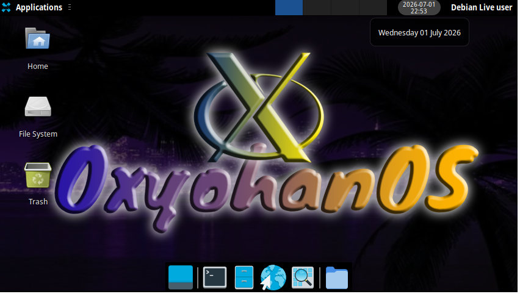

Foi a segunda build do OxyohanOS (Live CD) também compillada em 01/07/2026. Essa build inplementa fundos novos e Tema novo só que vem quebrado por padrão e tem que configurar manualmente
Essa build teste estranhamente não sei pra que motivo coloquei o RetroArch nela ;-;
També existe vídeo no canal do JohnzinOmochain que detalha a criação dessa primeira build e o link tá aí

Esse foi o fundo que foi adicionado, o wallpaper Yohan ou classic
Tambem temos a implementação do Aero Mashup que foi a mistura de
dois temas. Um da internet e outro do própio xfce